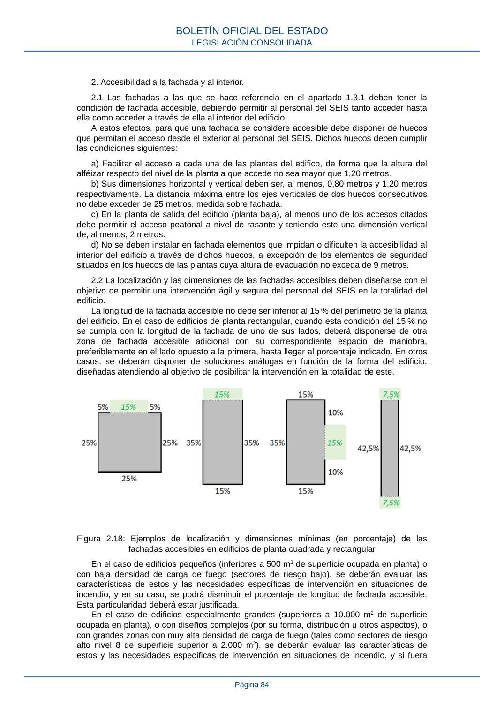

RSCIEI · Página 84 · versión 2025-04-10
SHA256: 85aa0af25d51e5b58d8975a4eefbf76d3f57a8933445cfe814ae9c4818a2e3e7 · página física 84 de 108 · métodos de encabezado
solo si están cotejados.
Formatos: Markdown · JSON de bloques · PDF p. 84 · imagen PNG
2. Accesibilidad a la fachada y al interior. 2.1 Las fachadas a las que se hace referencia en el apartado 1.3.1 deben tener la condición de fachada accesible, debiendo permitir al personal del SEIS tanto acceder hasta ella como acceder a través de ella al interior del edificio. A estos efectos, para que una fachada se considere accesible debe disponer de huecos que permitan el acceso desde el exterior al personal del SEIS. Dichos huecos deben cumplir las condiciones siguientes: a) Facilitar el acceso a cada una de las plantas del edifico, de forma que la altura del alféizar respecto del nivel de la planta a que accede no sea mayor que 1,20 metros. b) Sus dimensiones horizontal y vertical deben ser, al menos, 0,80 metros y 1,20 metros respectivamente. La distancia máxima entre los ejes verticales de dos huecos consecutivos no debe exceder de 25 metros, medida sobre fachada. c) En la planta de salida del edificio (planta baja), al menos uno de los accesos citados debe permitir el acceso peatonal a nivel de rasante y teniendo este una dimensión vertical de, al menos, 2 metros. d) No se deben instalar en fachada elementos que impidan o dificulten la accesibilidad al interior del edificio a través de dichos huecos, a excepción de los elementos de seguridad situados en los huecos de las plantas cuya altura de evacuación no exceda de 9 metros. 2.2 La localización y las dimensiones de las fachadas accesibles deben diseñarse con el objetivo de permitir una intervención ágil y segura del personal del SEIS en la totalidad del edificio. La longitud de la fachada accesible no debe ser inferior al 15 % del perímetro de la planta del edificio. En el caso de edificios de planta rectangular, cuando esta condición del 15 % no se cumpla con la longitud de la fachada de uno de sus lados, deberá disponerse de otra zona de fachada accesible adicional con su correspondiente espacio de maniobra, preferiblemente en el lado opuesto a la primera, hasta llegar al porcentaje indicado. En otros casos, se deberán disponer de soluciones análogas en función de la forma del edificio, diseñadas atendiendo al objetivo de posibilitar la intervención en la totalidad de este. Figura 2.18: Ejemplos de localización y dimensiones mínimas (en porcentaje) de las fachadas accesibles en edificios de planta cuadrada y rectangular En el caso de edificios pequeños (inferiores a 500 m2 de superficie ocupada en planta) o con baja densidad de carga de fuego (sectores de riesgo bajo), se deberán evaluar las características de estos y las necesidades específicas de intervención en situaciones de incendio, y en su caso, se podrá disminuir el porcentaje de longitud de fachada accesible. Esta particularidad deberá estar justificada. En el caso de edificios especialmente grandes (superiores a 10.000 m2 de superficie ocupada en planta), o con diseños complejos (por su forma, distribución u otros aspectos), o con grandes zonas con muy alta densidad de carga de fuego (tales como sectores de riesgo alto nivel 8 de superficie superior a 2.000 m2), se deberán evaluar las características de estos y las necesidades específicas de intervención en situaciones de incendio, y si fuera BOLETÍN OFICIAL DEL ESTADO LEGISLACIÓN CONSOLIDADA Página 84
